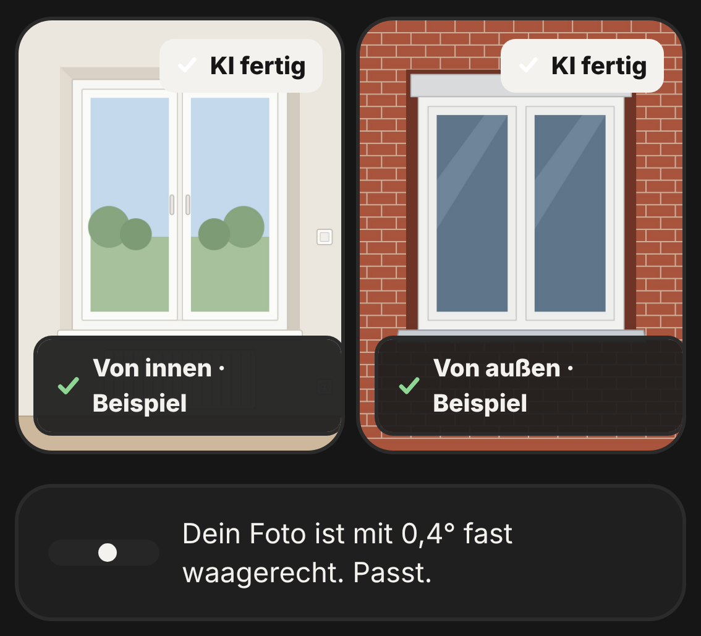

Fotos innen und außen
Zwei Fotos
je Fenster.
Die KI liest daraus Rollladenkasten, Anschlag, Fensterbänke und Fassade.
- Wasserwaage im Bild
- Vertauschte Maße fallen auf

Fotos innen und außen
Die KI liest daraus Rollladenkasten, Anschlag, Fensterbänke und Fassade.
